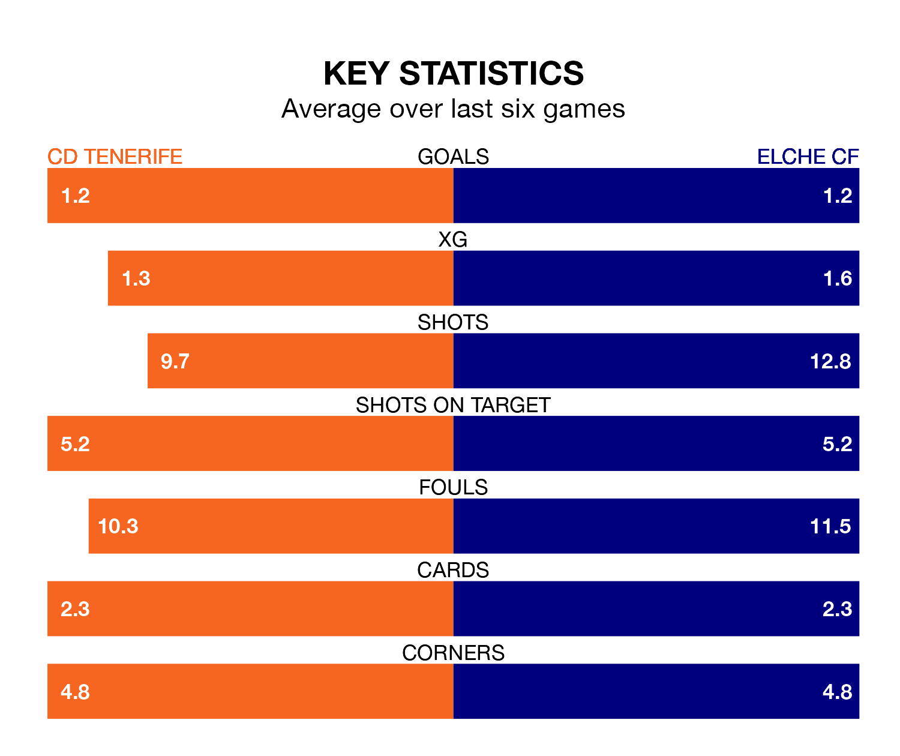

CD Tenerife host Elche CF on Saturday at the Estadio Heliodoro Rodríguez Lopéz in the Segunda División.
In their last league match, on December 20, Tenerife drew with Leganés 1-1 away, with their goal scored by Alberto Martín Díaz.
Elche also drew, 0-0 at home against Mirandés on December 19.
In Juan Soriano Oropesa, Tenerife can rely on one of the league's safest pair of hands. He has kept nine clean sheets in his 21 appearances this season, and only one other 'keeper – Sporting Gijón's Orlando Rubén Yáñez Alabart – has been able to prevent the opposition scoring on more occasions in the Segunda División.
In Elche's net, Miguel San Román Ferrándiz has six clean sheets in 14 games. He has conceded a goal every 97 minutes, 10% more often than the 111 minutes between goals for Soriano Oropesa.
In the last 10 years, Tenerife and Elche have played each other on 10 occasions. Tenerife won three of them, Elche four, and they drew three times.
On average, CD Tenerife scored 0.9 goals and Elche CF 1.2 in those matches.
Their last meeting was on October 28, when Elche won 2-1 at home.
With 21 goals in 21 games so far this season, CD Tenerife are scoring at below the league average rate with 1.0 goals per game. But they are conceding fewer than average too, letting in 20 goals at a rate of 1.0 per game.
Elche CF are also below average scorers, with 1.0 goal per game, compared to a league average of 1.2. They have also conceded 1.0 goal per game.
The hosts are in mixed form in the Segunda División, with two wins and two draws from their last six games.
With two wins and a draw over that period, the away side's form is slightly worse – they have taken seven points from 18, compared to Tenerife's eight.
Tenerife are ninth in the table after 21 games, of which they have won nine and drawn four, earning 31 points.
Elche are three places behind CD Tenerife in 12th, with eight wins and six draws putting them on 30 points.
Updated: 12:57, 02/01/24